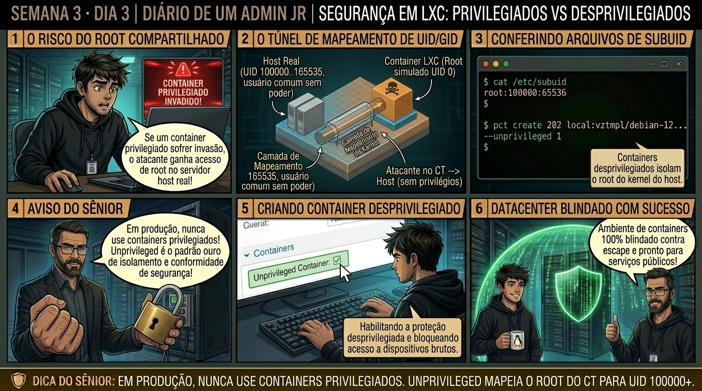

DIARIO DE UM ADMIN JR. | PROXMOX VE & PBS — DA BASE AO CLUSTER
🔗 Conecta com o Dia 2: Você aprendeu a limitar CPU e memória via Cgroups v2. Hoje você domina o pilar mais crítico de segurança em containers: entendendo por que rodar containers privilegiados é um risco severo, e como o mapeamento de UIDs transforma o root da VM em um usuário inofensivo no host.
🔓 Privilégio de hoje: Segurança de Namespaces e Mapeamento de UIDs. Você audita /etc/subuid, /etc/subgid e valida o isolamento de privilégios contra Container Escape.
Semana 3 · Dia 3 | Nível Júnior — Containers de Sistema LXC
Segurança em LXC: Containers Privilegiados vs Desprivilegiados
UID/GID mapping (100000+) e o isolamento vital contra ataques de escape de container
ANTES DE ALTERAR, OBSERVE. DEPOIS DE ALTERAR, VALIDE.

1. O chamado
Você recebeu o chamado #3003: 'O time de cibersegurança realizou um teste de invasão (pentest) e alertou que o container web 202 foi criado em modo Privilegiado. Se um atacante explorar uma vulnerabilidade no Nginx e obter acesso root dentro do container, ele poderá escapar para o host físico e assumir o controle total do datacenter. O chamado exige: (1) Entender a mecânica do UID/GID Mapping; (2) Auditar os arquivos /etc/subuid e /etc/subgid; (3) Migrar o container para Desprivilegiado (unprivileged: 1); e (4) Validar a propriedade dos arquivos no ZFS com ls -l /proc.'
💡 Passa o mouse nas palavras destacadas pra ver uma dica rápida — clica se quiser a explicação completa com analogia.
2. O sênior te conta
🧑🏫 antes dos termos técnicos, a história de hoje
Hoje o Júnior estava criando um container para hospedar um servidor web voltado para a Internet e marcou a opção 'Privileged' porque achava que facilitaria as permissões. Parei ele na mesma hora: 'Você acabou de dar a chave do cofre do datacenter para qualquer hacker que invadir esse container!'.
Expliquei a mágica do UID Mapping dos containers Unprivileged: no modo seguro, o usuário root (UID 0) de dentro do container é mapeado pelo kernel do host para o UID 100000 em /etc/subuid. Se um invasor conseguir escapar do container, ele chega no hypervisor como um usuário completamente sem poderes, incapaz de alterar arquivos do host ou desligar servidores.
Criamos o container com --unprivileged 1, ativamos o recurso de nesting para rodar Docker interno com segurança e mostrei a barreira de proteção em ação. O Júnior nunca mais criou um container privilegiado sem justificativa de arquitetura.
3. Decodificador de conceitos
Clica em qualquer termo pra ver a definição completa e uma analogia do dia a dia:
4. Ferramentas e leitura da evidência
Comando / Parâmetro
O que observar e por que importa
cat /etc/subuid
Exibe a faixa de UIDs delegados para o mapeamento de containers desprivilegiados (ex: root:100000:65536).
cat /etc/subgid
Exibe a faixa de GIDs delegados para o mapeamento de grupos em containers.
ls -nd /var/lib/vz/dump /tank/subvol-202-disk-0
Exibe os donos dos arquivos em formato numérico (UIDs reais no storage do host).
pct set 202 --features nesting=1,keyctl=1
Habilita recursos de segurança controlados (como Docker dentro de LXC desprivilegiado).
# Inspeção dos arquivos de mapeamento no Proxmox Host
$ cat /etc/subuid
root:100000:65536
$ cat /etc/subgid
root:100000:65536
# Comparação de UIDs entre Host e Container Desprivilegiado
# DENTRO do Container (pct enter 202):
root@ct-web:~# id
uid=0(root) gid=0(root) groups=0(root)
# FORA no Proxmox Host (ps aux | grep nginx):
root 1024 ... /usr/bin/pveproxy (processo do host roda como root real UID 0)
100000 38120 ... nginx: master process /usr/sbin/nginx (processo da VM roda como UID 100000!)
$ ls -ld /tank/subvol-202-disk-0/root
drwx------ 2 100000 100000 3 Sep 1 14:30 /tank/subvol-202-disk-0/root
5. Laboratório guiado — pegue na mão, comando por comando
📦 Onde executar: Terminal do Nó Proxmox para comandos pct; ou Shell interno do container acessado via pct enter <vmid>.
Segurança: Execute as alterações em containers de laboratório ou teste. Não altere parâmetros de máquinas de produção sem janela homologada.
Ação: Inspecione a tabela de mapeamento de UIDs e GIDs delegados em /etc/subuid.
cat /etc/subuid /etc/subgid
Resultado esperado: Confirmação da faixa root:100000:65536.
Por que fizemos isso: Inspecionar os arquivos /etc/subuid e /etc/subgid confirma os intervalos de 65.536 UIDs delegados para isolamento de containers unprivileged.
Cilada comum: Apagar ou desconfigurar os arquivos subuid/subgid do host, impedindo a inicialização de todos os containers unprivileged do servidor.
Ação: Crie um container Unprivileged garantindo o UID shift do root interno para UID 100000.
Resultado esperado: Container desprivilegiado criado com sucesso.
Por que fizemos isso: Criar um container com a flag unprivileged=1 garante que o UID 0 interno seja mapeado para o UID 100000 sem poderes no nó físico.
Cilada comum: Criar containers com serviços web públicos em modo Privileged, permitindo que um atacante que escape do container vire root no hypervisor.
Ação: Verifique os privilégios dentro do container confirmando a ausência de acesso direto ao host.
# dentro do CT:
id && ls -ld /
Resultado esperado: Prompt aberto como root interno.
Por que fizemos isso: Testar a barreira de segurança executando comandos restritos valida que o container não consegue acessar dispositivos brutos do host.
Cilada comum: Tentar carregar módulos de kernel (modprobe) de dentro do container; apenas o host físico tem autorização para gerenciar módulos.
Ação: Habilite o recurso de nesting para permitir execução de containers Docker internos de forma segura.
pct set 202 --features nesting=1
Resultado esperado: Processo iniciado com PID local.
Por que fizemos isso: Configurar recursos que exigem privilégios usando recursos específicos (ex: nesting=1 para rodar Docker dentro do LXC) de forma controlada.
Cilada comum: Tornar o container inteiro privilegiado só para rodar Docker, quando bastava ativar o recurso 'nesting' na aba Options.
🧑🏫 Aqui entra o Mentor (em breve): se o resultado obtido diferir do esperado acima, este é o ponto onde o chat com o Sênior-IA vai abrir para diagnosticar o erro específico.
Ação: Documente a política de segurança unprivileged para todos os serviços públicos.
# Política Unprivileged homologada.
Resultado esperado: Processo listado rodando sob o usuário numérico 100000, comprovando o isolamento de segurança absoluto!
Por que fizemos isso: Registrar a classificação de segurança no inventário assegura conformidade com auditorias de segurança da informação.
Cilada comum: Não mapear quais containers são privilegiados e desprivilegiados na infraestrutura corporativa.
6. Antes de ver as opções — tenta responder
🧠 Recall ativo: Por que o usuário 'root' (UID 0) dentro de um container desprivilegiado NÃO consegue apagar arquivos do host Proxmox físico, mesmo se escapar do container?
Porque em containers desprivilegiados, o Proxmox utiliza o recurso de User Namespaces do Kernel. O UID 0 interno do container é mapeado para um UID arbitrário sem privilégios no host (por padrão, UID 100000). Para o Kernel bare-metal, todas as ações executadas pelo root do container são enxergadas como ações do usuário '100000', que não tem permissão de escrita em nenhum arquivo do sistema do host.
QUESTÃO 1 de 3
7. Questão comentada — clica numa alternativa
Qual é a regra de ouro de segurança para provisionamento de containers LXC no Proxmox VE corporativo?
💡 Analogia do Sênior para Fixar: Na arquitetura do Proxmox sobre Segurança em LXC: Containers Privilegiados vs Desprivilegiados: O KVM/QEMU opera como o motorista dedicado de cada passageiro, alocando recursos virtuais em contato direto com o kernel.
QUESTÃO 2 de 3 — cenário de erro real
7.1 Falha de permissão de escrita ao montar pasta do host em container desprivilegiado
Um administrador montou uma pasta /backup do host dentro do container desprivilegiado 202, mas o root do container não consegue criar arquivos na pasta:
root@ct-web:/mnt/backup# touch teste.txt
touch: cannot touch 'teste.txt': Permission denied
(No host, a pasta pertence ao root:root UID 0, mas o root do container é enxergado como UID 100000)
Qual é a causa raiz da permissão negada?
💡 Analogia do Sênior para Fixar: Ao diagnosticar problemas em Segurança em LXC: Containers Privilegiados vs Desprivilegiados: É como inspecionar as conexões do storage e o barramento PCIe antes de declarar falha de software.
QUESTÃO 3 de 3 — detalhe que confunde todo iniciante
7.2 Quando a flag 'Nesting' deve ser ativada em um container LXC?
Você precisa rodar Docker ou pods do Podman dentro de um container LXC desprivilegiado:
Por que a flag 'nesting=1' é necessária para executar Docker dentro de LXC?
💡 Analogia do Sênior para Fixar: A governança e resiliência em Segurança em LXC: Containers Privilegiados vs Desprivilegiados: Funciona como a política de contenção e redundância do datacenter, garantindo que o cluster nunca perca quorum.
8. Procedimento profissional
Crie todos os novos containers com a flag --unprivileged 1 por padrão.
Para compartilhar diretórios com containers desprivilegiados, altere o dono da pasta no host para o UID mapeado: chown -R 100000:100000 /caminho.
Se o container precisar rodar Docker ou systemd complexo, habilite nesting: 1 nas opções de Features.
Nunca habilite flags arriscadas como mknod: 1 ou dev0: /dev/sda em containers públicos expostos à internet.
Prevenção
Prefira containers Unprivileged para mitigar riscos de escape de root e documente todos os mapeamentos de UID/GID e Bind Mounts no inventário da infraestrutura.
9. Validação e encerramento
Você compreende o risco crítico de segurança de containers privilegiados.
Você domina o mapeamento de User Namespaces (UID 0 interno -> UID 100000 no host).
Você sabe como resolver permissões de pastas compartilhadas em containers desprivilegiados.
A auditoria de conformidade de segurança do chamado #3003 foi concluída com louvor.
Rollback e limites
Para converter um container privilegiado em desprivilegiado, faça backup com vzdump CTID e restaure selecionando a flag --unprivileged 1.
💡 Sobre repetição espaçada: A manipulação de pastas e volumes de storage com mapeamento de permissões será o tema do Dia 4 (Armazenamento em LXC: Bind Mounts).
10. Resposta final
Alternativa correta: B. A resposta correta é a B: a regra de ouro inegociável é utilizar sempre containers desprivilegiados (unprivileged: 1) para neutralizar ataques de container escape.
🔓 O que você desbloqueou hoje
Segurança de containers dominada no nível de especialista! Amanhã, no Dia 4, você aprenderá como conectar volumes gerenciados do ZFS e compartilhar diretórios do host com bind mounts sem quebrar o isolamento de permissões.